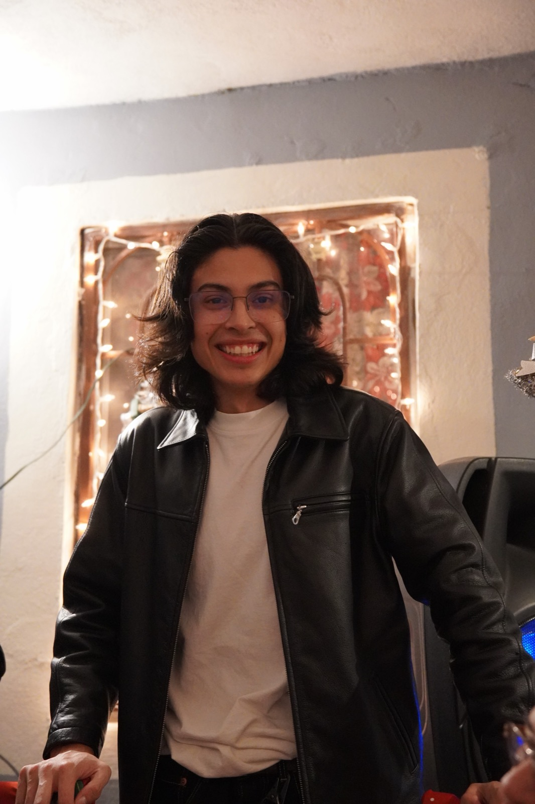

About + Resume
Francisco Benavidez
Developer · Photographer · Creator — Brownsville, Texas

Photographer and creative focused on portraits, events, and brand visuals. I combine strong composition with consistent editing and reliable delivery.
Overview
Summary
Detail-oriented creative with experience planning shoots, directing subjects, and delivering polished edits. Comfortable collaborating with clients, managing timelines, and adapting quickly in fast-paced environments.
Creative Skills
- Portrait & event coverage
- Lighting (natural / off-camera)
- Color correction & retouching
- Client communication
- Shot lists & planning
- Fast turnaround workflows
- Social-ready exports
- Basic video capture/editing
Creative Tools
Work History
Experience
- Shot portraits and events; delivered curated galleries with consistent edits.
- Coordinated shoot logistics: locations, timelines, and shot lists.
- Produced social-ready exports for clients and brands.
Education
Education
B.S. Computer Science · Minor in Film Production · GPA 3.3
Diploma · GPA 3.9 · Microsoft Technology Associate · Top 10% Class of 2022
Background
Built on Real Experience
Throughout high school and college, I built a strong foundation in customer-facing roles across retail and tech support environments. These experiences sharpened my ability to communicate complex ideas clearly, troubleshoot problems under pressure, and guide people through technology they weren't familiar with — all while maintaining a consistent focus on delivering a great experience to everyone I worked with.
What I Brought Away
Technical Troubleshooting
Resolved hardware, software, and LMS issues for students and faculty under time pressure.
Clear Communication
Explained complex technology to non-technical customers in plain, helpful language.
Inventory & Systems
Tracked and managed inventory using specialized software with precision and efficiency.
Consultative Selling
Matched customers to the right products based on needs, budget, and preferences.
High-Volume Support
Managed inbound and outbound calls, ensuring timely follow-up and issue resolution.
Bilingual Service
Assisted English and Spanish-speaking customers across every role I held.
Technologies & Tools